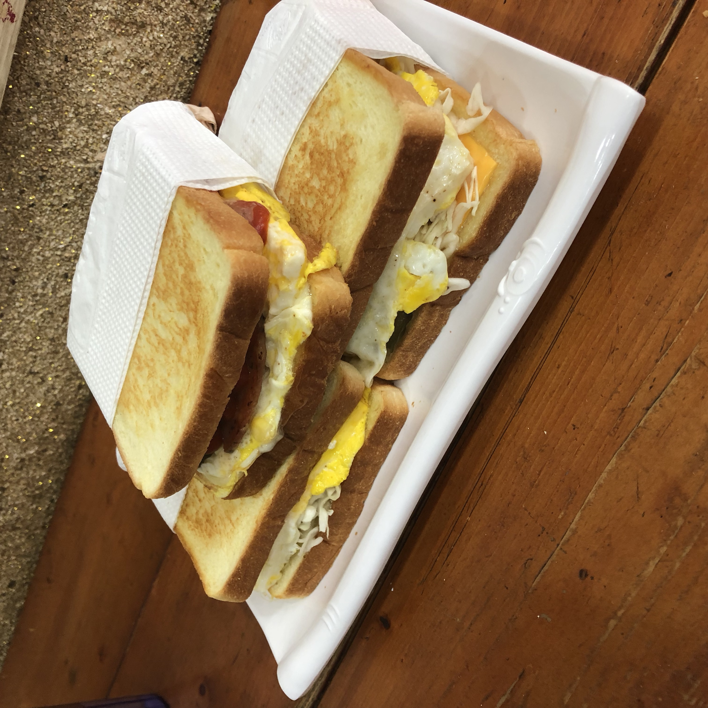

고시촌 미식회
이삭토스트

이삭토스트는 미림여고/여정 옆에 위치한 토스트 가게입니다.
다양한 메뉴들이 있으며 가장 기본 메뉴는 햄치즈 토스트입니다.
가장 큰 장점은 가격이 저렴하다는 점입니다.
매장 내부가 매우 좁은 편인 것이 단점입니다.
현금 결제시 스티커를 모을 수 있습니다.
음식이 나오는 데에 그렇게 오래 걸리는 편은 아닙니다.
빨리 배를 채워야 한다면 추천합니다.
주소 : 서울 관악구 호암로 534
고시촌 미식회 별점:
★★★
▲ 위 사진은 누르시면 더 다양한 메뉴를 보실 수 있으십니다.
 고시촌 미식회
고시촌 미식회